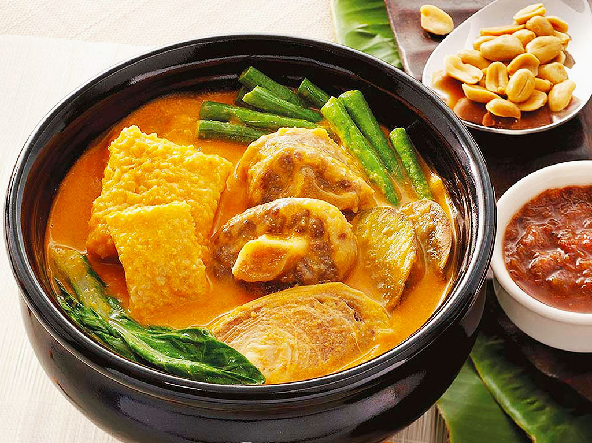

Kare-kareng Pata
Back

Ingredients
- 2 pounds pork belly, cut into 1-1/2 inch cubes
- 1/4 cup vinegar
- 1/2 cup soy sauce
- 1 cup pineapple juice
- 1 tablespoon oil
- 1 small onion, peeled and sliced thinly
- 6 cloves garlic, peeled and minced
- 1 teaspoon peppercornst
- 2 bay leaves
- 1 can (6 ounces) tausi (salted black beans), drained and rinsed
- 1 cup pineapple chunkss
- 1 package (1 ounce) dried banana blossomss
- 1 tablespoon brown sugar
- salt to tastes
Instructions
- 1. Rinse pork shanks under cold, running water. In a deep pot over medium heat, combine pork and enough water to cover. Bring to a boil, skimming any scum that accumulates on top.
- 2. Lower heat, cover, and simmer, adding more water as needed to maintain 7 cups, for about 1 to 2 hours or until pork shanks are very tender but not falling apart. Drain meat, reserving 7 cups of broth.
- 3. In a skillet over medium heat, add rice flour and cook, stirring occasionally, until lightly browned and toasted..
- 4. In a bowl, combine toasted rice flour, annatto powder, and 1 cup of the reserved broth and whisk until smooth and well blended. Set aside.
- 5. In a large pot over medium heat, heat oil. Add onions and garlic and cook until softened...
- 6. Add pork shanks and cook, stirring occasionally, until lightly browned.
- 7. Add fish sauce and cook for about 1 minute..
- 8. Add the remaining 6 cups of reserved broth and bring to a simmer.
- 9. Add rice flour mixture and peanut butter, whisking well to prevent lumps.
- 10. Season with salt and pepper to taste..
- 11. Meanwhile, in a pot over medium heat, bring about 4 cups of water to a boil. Add eggplant and blanch for about 1 minute. With a slotted spoon, remove from liquid and immediately plunge in a bowl of iced water
- 12. Add long beans and blanch for about 1 minute. With a slotted spoon, remove from the liquid and immediately plunge in a bowl of iced water
- 13. Add pechay and blanch for about 30 seconds. With a slotted spoon, remove from liquid and immediately plunge in a bowl of iced water.
- 14. Drain vegetables very well and add vegetables to the kare kare. Continue to cook for about 3 to 5 minutes or until heated through.
- 15. Arrange kare-kare on a serving platter and serve with sauteed shrimp paste on the side.